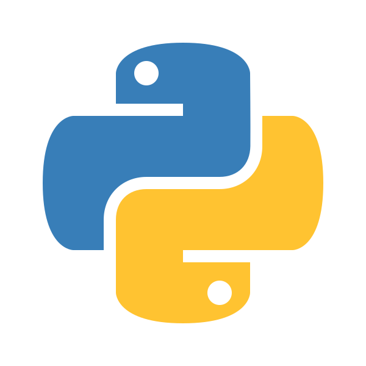
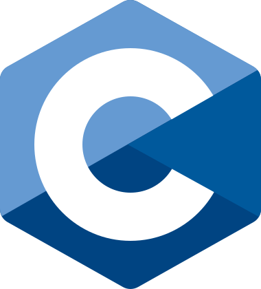
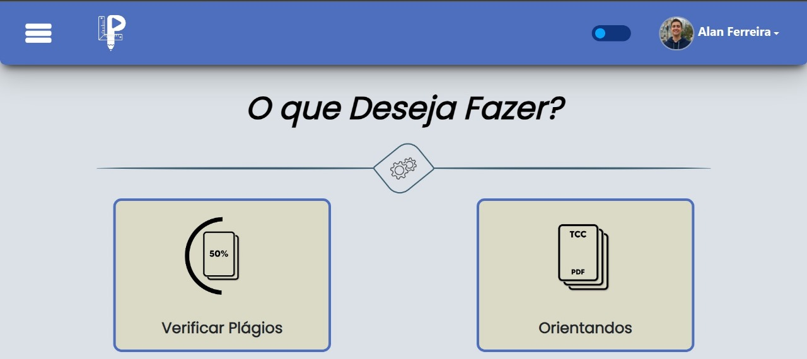

Sobre o Portfólio
O projeto em questão se trata de um trabalho desenvolvido para a disciplina de Projeto Integrado, com o intuito de estimular o enriquecimento do currículo por meio do aprendizado das linguagens HTML, CSS e JavaScript. Além disso, desenvolvendo uma central para reunir todos os projetos concluídos (e até os que estão em andamento) incentiva os estudantes a buscarem formas de aprender outras tecnologias e/ou práticas da área da tecnologia da informação para que o presente projeto se torne mais abrangente e permita que o desenvolvedor possa ser visto como um profissional competente e necessário no mercado.
Sobre o Desenvolvedor
Desde muito cedo tive contato com um computador, mas o potencial de utilização apenas veio a se aprimorar quando passei a cursar o Ensino Médio no Instituto Federal de São Paulo - Campus Votuporanga (2021-2023). O curso Técnico em Informática me apresentou as possibilidades do ramo da computação e tecnologia em geral, e permitiu que eu fosse capaz de compreender e estruturar sistemas úteis para as mais diversas necessidades do mercado. Entre as competências técnicas desenvolvidas estão a lógica de programação e experiência em Java; struturação e organização de Banco de Dados por meio da modelagem com Diagrama Entidade-Relacionamento (DER), bem como a criação de banco de dados com a linguagem SQL, usando o sistema de banco de dados PostGreSQL e MySQL; Na parte web, experiências foram, adquiridas acerca da história por trás da ciração da web, bem como a forma de produzir produtos com HTML, CSS, JavaScript e PHP; Outros conhecimentos são teóricos na área de Redes de Computador e Segurança da Informação, com cursos baseados na metodologia da plataforma/empresa de dispostivos de rede e cibersegurança CISCO, com os cursos GET CONNECTED, NETWORKING ESSENTIALS, assim como experiência com a utilização do simulador de construção de redes Packet Tracer (também da CISCO); além destes conhecimentos, noções básicas sobre o funcionamento de um computador, a nível de hardware, foram aprendidos.
Área de Interesse
A princiapl área com a qual pretendo trabalhar é a de segurança da informação. Um dos motivos é pela alta relevância, e pela crescente necessidade, por parte das empresas, de um aconselhamento/estruturação correta do registro das informações e dados sensíveis. Na área digital, o ativo mais precioso e, portanto, mais disputado, é a informação, que quanto mais confidenciais, mais inseguras estão, por este motivo, se faz necessário o aumento de profissionais na área. Além do aspecto da necessidade, esta é uma das áreas que mais promovem a integração e a multidiscplinaridade entre as diversas áreas da computação, já que o profissional precisa ter uma visão integrada com a realidade da informática no momento em que se encontra, bem como estar ciente das implicaçoes jurídicas que uma falha na segurança pode representar para ele, para a empresa para a qual trabalha, para a sociedade e sua parcela que está envolvida com a aquela empresa e, principalmente, para a pessoa que iniciou a violação da segurança.
Sobre as Tecnologias
Ao longo da minha trajetória tive contato com diversas tecnologia de desenvolvimento, envolvendo linguagens de desenvolvimento para sistemas web (HTML, CSS, JavaScript, PHP) e linguagens para propósitos gerais (C, Java, Python e SQL). Alguns projetos foram desenvolvidos com eles, com a grande maioria dos projetos produzidos tendo sido produzidos durante o período em que estudei no IFSP - Campus Votuporanga. Outros projetos foram produzidos durante os estudos no Centro Universitário de Votuporanga - UNIFEV.
Tecnologias
Conheça as principais ferramentas que utilizo no desenvolvimento:

HTML5
Linguagem de marcação para estrutura de páginas web. Semântica, acessibilidade e SEO.

CSS3
Estilização avançada com Flexbox, Grid, animações e responsividade.

JavaScript
Interatividade, manipulação do DOM, APIs e lógica de programação.

PHP
Backend dinâmico, sistemas robustos e integração com banco de dados.

Java
Orientação a objetos, aplicações empresariais e Android nativo.

Python
Backend, automação, análise de dados e inteligência artificial.

SQL
Gerenciamento de bancos de dados relacionais, consultas e modelagem de dados.

C
Programação de baixo nível, sistemas embarcados e lógica de alto desempenho.
Sobre os Projetos Concluídos
A presente seção apresenta todos os principais projetos desenvolvidos ao longo dos anos com contato com principais tecnologias de desenvolvimento, elencando o ano do desenvovimento, a linguagem e uma breve descrição do propósito do projeto.
Meus Projetos
Conheça alguns dos trabalhos que desenvolvi ao longo dos anos.

LePlay - Ferramenta Pedagógica de Auxílio para Orientadores
Ano: 2023
Tecnologias: HTML, CSS, JavaScript, PHP, SQL, AJAX
Descrição: O projeto, também desenvolvido no IFSP, se trata do sistema produzido em dupla na disciplina de Projeto Integrador, disciplina referente à elaboração do TCC, instrumento de avaliação indispensável para a conclusão do Ensino Médio com o curso Técnico em Informática integrado. O objetivo do produto final é ser um HUB de produção científica, permitindo que discentes orientados e seus respectivos docentes orientadores tenham um espaço único e profissional para conseguir separar a vida pessoal em outras redes sociais da vida acadêmica, mantendo organização (por meio de envio de pdfs e associação de orientando e orientado) e comunicação (por meio de um chat em tempo real).
Status: 🔒 Temporariamente Indisponível